Lower Cervical Spine
Comprehensive notes covering anatomy, biomechanics, diagnosis, muscle energy, and counterstrain for the lower cervical region (C2–C7).
Communication, Consent & Professional Touch
Communicating with Patients (Lay Terms)
- Explain what you are going to do before you do it
- Describe procedures in plain language: "I'm going to gently feel the joints in your neck and move them to see which directions feel stiff."
- Avoid jargon like "zygapophyseal joint" or "somatic dysfunction"
- Ask about comfort throughout the exam
- Use terms like "tender spot," "stiff area," "joint that doesn't move well"
- Explain treatment benefit in terms of outcomes: "This gentle technique may help reduce stiffness and pain."
Communicating with Medical Professionals
- Use standardized TART notation: e.g., C5 ERSl
- Document somatic dysfunction diagnoses using ICD coding
- Describe findings: asymmetry, tissue texture change, restriction of motion, tenderness
- Reference specific anatomic landmarks (articular pillar, transverse process, uncinate process)
- Communicate technique rationale: "Used muscle energy targeting C5 extended, rotated and sidebent left to restore motion"
Obtaining Informed Consent
- Explain the procedure, its purpose, and what the patient should expect to feel
- Describe potential risks and benefits
- Confirm the patient understands and agrees before proceeding
- Respect the right to refuse or withdraw consent at any time
Professionalism & Consensual Touch
- Careful touch: Use appropriate pressure; avoid pressing on sensitive structures (carotid pulse, anterior transverse processes) without warning
- Considerate touch: Monitor patient comfort continuously; check in verbally throughout
- Consensual touch: No touch without prior consent; explain each new area of contact before touching
- Positioning comfort: Ensure patient's head is supported and they feel safe (e.g., head grounded in your hand, resting on the table—not feeling like it could drop)
- Slow transitions: Move in and out of treatment positions gradually; do not abruptly release the head
Anatomic Landmarks of the Lower Cervical Spine
Vertebrae Overview
Typical Cervical Vertebrae (C3–C6)
- Bifid spinous processes — short, forked at the tip
- Short transverse processes with transverse foramina (for vertebral arteries)
- Uncinate processes — bony ridges on the lateral edges of the superior vertebral body; create a saddle shape
- Articular process — located between the superior and inferior articular facets
- Articular pillar — the column formed by stacked articular processes; the primary palpatory target
Atypical Cervical Vertebrae
- C1 (Atlas): No vertebral body; a ring that rotates around the dens of C2; no spinous process
- C2 (Axis): Has the dens (odontoid process), which is essentially the body of C1; site of primary rotation
- C7: Has a large non-bifid spinous process (like thoracic vertebrae); palpable landmark. When patient looks up, C7 is less prominent; T1 remains prominent — helps identify C7 vs T1
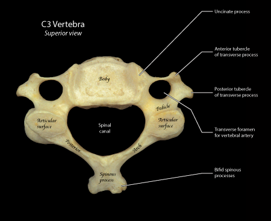
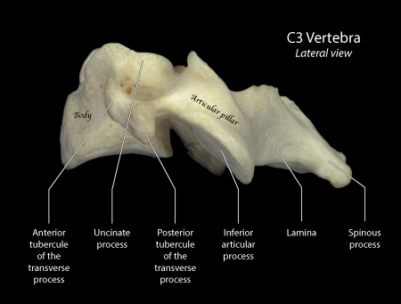
Click any image to zoom.
Key Surface Landmarks for Palpation
| Landmark | Approximate Level | Clinical Use |
|---|---|---|
| Angle of the mandible | ~C3 | Rough guide for locating C3 transverse process |
| Mental process (chin) | ~C4 | Rough guide for C4 level |
| Hyoid bone | C3 | More precise surgical landmark |
| Thyroid cartilage | C4–C5 | Landmark for mid-cervical levels |
| Cricoid cartilage | C6 | Landmark for C6 |
| Vertebra prominens | C7 | Most prominent posterior spinous process; primary landmark for counting |
| Mastoid process | — | Posterior anchor for finding C1 lateral process (AC1 tender point) |
Articulations of the Cervical Spine
Intervertebral Joint
- Fibrocartilaginous joint
- Disc is thicker anteriorly → creates the normal lordosis
Zygapophyseal (Facet) Joint
- Synovial joints
- Oriented 45° in the coronal plane, backward, upward, medial (BUM)
- Allows flexion, extension, lateral flexion, and rotation
Uncovertebral Joint (Luschka)
- Formed by uncinate processes
- Creates the saddle shape of the vertebral bodies
- Stabilizes the cervical spine
- Decreases incidence of disc herniation
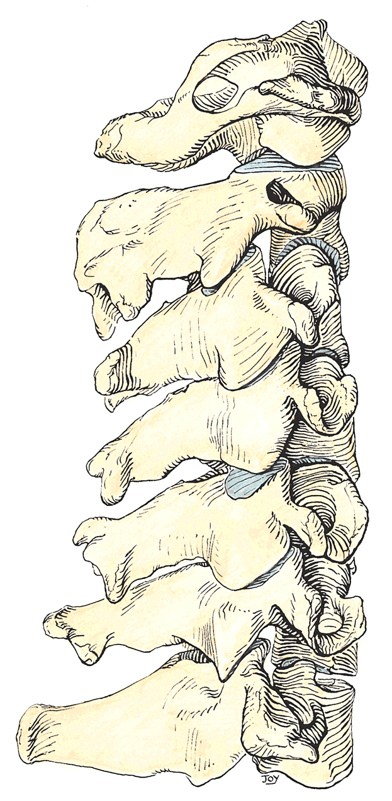
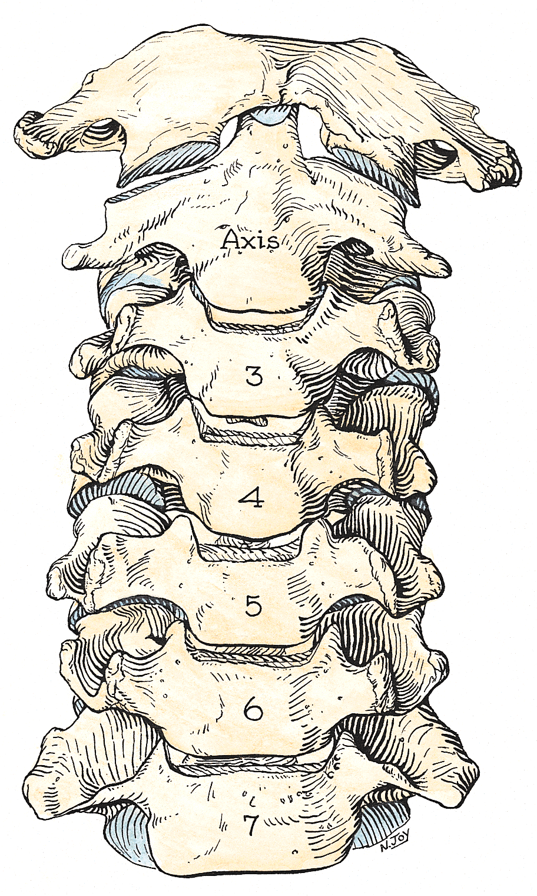
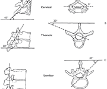
Key Ligaments
- Anterior Longitudinal Ligament (ALL) — runs entire length of spine on anterior aspect; relatively narrow
- Posterior Longitudinal Ligament (PLL) — runs inside the spinal canal; posterior to vertebral bodies
- Ligamentum Flavum — "yellow ligament"; forms the posterior wall of the spinal canal between arches
- Interspinous Ligament — connects adjacent spinous processes
- Ligamentum Nuchae — the cervical continuation of the supraspinous ligament; a major posterior support for the head; fills the spaces between the small cervical spinous processes
Key Muscles
| Action | Primary Muscles |
|---|---|
| Flexion (bilateral) | Longus colli, Scalenes, SCM |
| Extension (bilateral) | Levator Scapulae, Trapezius, Splenius cervicis/capitis, Iliocostalis cervicis, Longissimus capitis, Semispinalis cervicis/capitis, Multifidus |
| Sidebending | Scalenes, Splenius capitis/cervicis, Iliocostalis cervicis, Longissimus capitis/cervicis, Intertransversarii |
| Rotation | Splenius cervicis, Semispinalis capitis/cervicis, Multifidus, Rotatores |
| SCM | Bilateral: flexion; Unilateral: ipsilateral sidebending + contralateral rotation |
Biomechanics of the Lower Cervical Spine
Regional Mechanics at a Glance
| Region | Mechanics | Notes |
|---|---|---|
| Occiput–C1 (OA) | Type I-like | Sidebending and rotation opposite; primary flexion/extension of the head |
| C1–C2 (AA) | Rotation | ~50% of total cervical rotation occurs here; dens as pivot |
| C2–C7 (Lower Cervicals) | Type II-like | Sidebending and rotation ALWAYS coupled in the SAME direction |
| T1–L5 | Type I and II | Standard Fryette's laws apply |
Lower Cervical Coupling Rule (C2–C7)
In the lower cervicals, sidebending and rotation are ALWAYS coupled in the SAME direction, regardless of whether the segment is flexed, extended, or neutral.
- Sidebent LEFT → also Rotated LEFT
- Sidebent RIGHT → also Rotated RIGHT
- There is almost ALWAYS a flexion or extension component
- Pure neutral mechanics are possible but rare in clinical practice
Role of Key Joints in Biomechanics
Zygapophyseal (Facet) Joints
- Oriented 45° from the transverse plane in the coronal plane (BUM — Backward, Upward, Medial)
- Slope allows all motions: flexion, extension, sidebending, rotation
- Rotation occurs around the facet that is "relatively more closed" — the vertebra rotates away from it
- The more prominent/resistant articular pillar is on the side OPPOSITE to the direction of rotation
- Think of "lateral translation" as the key movement — pushing one articular pillar induces sidebending toward the opposite side
Uncovertebral Joints (Joints of Luschka)
- The saddle shape of the vertebral body (created by uncinate processes) guides and constrains motion
- Help couple sidebending and rotation in the same direction
- Stabilize the segment and prevent excessive disc herniation
- Anterior cervical tender points are found at the anterior aspect of the transverse processes — near where scalene muscles attach
Translation → Sidebending Relationship
Translating the vertebra from LEFT to RIGHT = induces sidebending to the LEFT + rotation to the LEFT.
Think of pushing one side of a bow — the bow bends toward the other side.
Motion Barriers — Anatomic, Physiologic & Pathologic
| Barrier Type | Description | Clinical Significance |
|---|---|---|
| Anatomic | The absolute end of range — defined by bone-on-bone or structural limits. CANNOT be exceeded without injury. | Never approach this; HVLA should not exceed the physiologic barrier |
| Physiologic | The normal range of active motion. Defined by muscle strength and ligamentous tension. Variable between individuals. | Passive motion can exceed this slightly without pathology |
| Elastic Zone | The zone between physiologic and anatomic barriers — accessible only with passive motion; springs back | HVLA is performed in this zone; ME works at the physiologic barrier edge |
| Restrictive / Pathologic | An abnormal barrier within the physiologic range, caused by somatic dysfunction. Motion is reduced compared to normal. | The target of OMT — removing the restrictive barrier restores normal motion |
The "Feather's Edge" — Key for Muscle Energy
Neurovasculature of the Cervical Spine
Vertebral Arteries
- Vertebral arteries ascend through transverse foramina bilaterally (starting at C6, some say C7)
- At C1, they curve posteriorly then superiorly to enter the skull via the foramen magnum
- They unite to form the basilar artery
- The nerve root and vertebral artery foramen are in close proximity — dysfunction in one can affect the other
- Segmental rotation of a cervical vertebra places tension on the vessel ipsilaterally
Vagus Nerve (CN X)
- Exits the skull via the jugular foramen (along with CN IX — glossopharyngeal, and CN XI — spinal accessory)
- Travels in the carotid sheath between the carotid artery and jugular vein
- Provides parasympathetic innervation to all thoracoabdominal viscera down to the splenic flexure of the colon
- Cervical somatic dysfunction can compress or tension the vagus → may affect GI motility, cardiac rate, respiratory function
- Clinically significant: reflux, nausea, otitis media, sinus issues can all relate to upper cervical/OA dysfunction affecting vagal tone
Spinal Accessory Nerve (CN XI)
- Also exits via jugular foramen
- Innervates SCM and trapezius
- Restriction at the occipitomastoidal suture (where jugular foramen forms) can irritate CN XI → hypertonicity of SCM/trapezius that is resistant to direct treatment
Cervical Nerve Roots
Sympathetic Trunk
- Runs adjacent to the carotid sheath, closely parallel to the vagus nerve
- Cervical sympathetics come from upper thoracic cord (T1–T5)
- Segmental dysfunction causing rotation can put pressure on or tension the sympathetic trunk
Greater Occipital Nerve
- Emerges through the upper trapezius attachment
- Hypertonic upper trapezius or levator scapulae can compress this → occipital headaches
- Managing cervical tension and treating the OA can relieve greater occipital neuralgia
Osteopathic Structural Exam of the Lower Cervical Spine
Patient Position
Patient is supine. Physician is seated at the head of the table. Patient's head rests on the table (not held up by the physician).
Step 1: Screening — Translatory Motion Testing
- Place middle fingers (or index fingers) bilaterally on the articular pillars of each cervical level. Brace patient's head with palms to prevent excessive movement.
- Translate the segment from right to left (push the right articular pillar), then from left to right (push the left articular pillar).
- Compare ease of motion in each direction. A resistant, "stuck" segment is the dysfunctional one.
- Note any tenderness on palpation — this contributes to TART.
- A segment that does NOT translate easily from right to left is sidebent right and rotated right. Note the level and direction of restriction.
- Work systematically from C2 to C7 (or top to bottom or bottom to top — no mandated order).
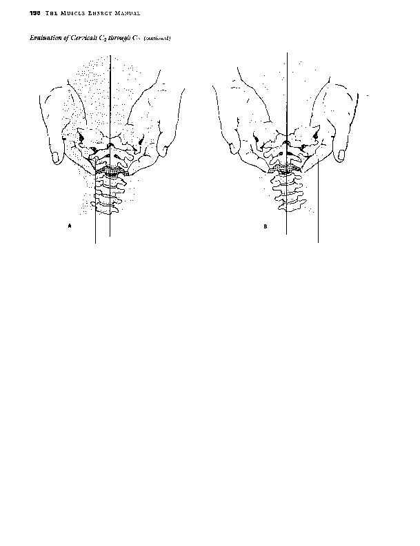
Step 2: Flexion/Extension Testing of Restricted Segments
For each restricted segment identified in the screen:
- Flexion test: Scoop/lift the patient's head and tuck the chin to flex down to the level of the restricted segment. Then attempt translation again. If restriction IMPROVES in flexion → the dysfunction is EXTENDED (it prefers flexion = extended dysfunction).
- Extension test: Place ring and pinky fingers just inferior to the restricted segment and lift toward the ceiling to induce local extension at that level. Then attempt translation. If restriction IMPROVES in extension → the dysfunction is FLEXED (it prefers extension = flexed dysfunction).
- Confirm: the side of resistance corresponds to sidebending and rotation toward the same side.
Named by what it CAN do (its position of ease) → C6 FRSr
Translation → Diagnosis Logic
| Cannot translate… | Sidebending | Rotation | Worse in… | Diagnosis |
|---|---|---|---|---|
| R → L | Right | Right | Flexion | ERSr |
| R → L | Right | Right | Extension | FRSr |
| L → R | Left | Left | Flexion | ERSl |
| L → R | Left | Left | Extension | FRSl |
TART Findings & Somatic Dysfunction Notation
TART Components
T — Tissue Texture Change
Palpatory changes in the skin, fascia, or muscle overlying the dysfunctional segment. May include: bogginess, ropiness, increased firmness, moisture changes.
A — Asymmetry
Positional asymmetry of the articular pillar, transverse process, or spinous process. In the cervical spine, the prominent (resistant) articular pillar is on the side OPPOSITE the rotation direction.
R — Restriction of Motion
Reduced range of motion in one or more planes. Identified by translatory testing in the cervical spine. The segment does not translate easily in the direction of restriction.
T — Tenderness
Palpatory tenderness at the articular pillar or associated soft tissues. Note whether tenderness is unilateral or bilateral and its severity.
Three-Positional Diagnosis Notation
[Segment] [E or F] [R or S] [r or l]
- E = Extended dysfunction (prefers extension; restricted in flexion)
- F = Flexed dysfunction (prefers flexion; restricted in extension)
- R = Rotation (same direction as sidebending)
- S = Sidebending (same direction as rotation)
- Lowercase r = right, l = left
Translating TART → Somatic Dysfunction Diagnosis
| Finding | Meaning |
|---|---|
| Prominent articular pillar on the right | Rotated RIGHT → sidebent RIGHT |
| Cannot translate R→L; worse in flexion | ERSr (extended, prefers extension, restricted in flexion) |
| Cannot translate L→R; worse in extension | FRSl (flexed, prefers flexion, restricted in extension) |
| Tender anterior transverse process on left | Anterior counterstrain tender point on left → treat with CS |
| Motion improves in flexion position | Dysfunction is Extended (EXTENDED = better in flexion) |
| Motion improves in extension position | Dysfunction is Flexed (FLEXED = better in extension) |
Worked Examples
Example A
C6 translates easily from L→R but NOT from R→L. It is WORSE in extension and BETTER in flexion.
Analysis: Cannot go R→L → restricted in right sidebending/rotation. Worse in extension → prefers flexion → FLEXED dysfunction.
Diagnosis: C6 FRSr
Example B
C3 translates easily from R→L but NOT from L→R. It is WORSE in flexion and BETTER in extension.
Analysis: Cannot go L→R → restricted in left sidebending/rotation. Worse in flexion → prefers extension → EXTENDED dysfunction.
Diagnosis: C3 ERSl
Example C — Backward Reasoning
Patient is diagnosed with C5 ERSl. What would you find on exam?
Analysis: Extended = worse in flexion. Sidebent/Rotated LEFT = prominent articular pillar on the RIGHT. Will NOT translate from R→L. Worse (more restricted) in flexion.
Answer: Prominent articular pillar on the RIGHT at C5. Cannot translate R→L. Restriction worse in flexion.
Red Flags & Safety Considerations
Red Flags in History
- Severe trauma (MVA, fall, assault)
- Bladder incontinence or bowel changes
- Weakness or paralysis in extremities
- High fever (possible infection/meningitis)
- Inability to flex the cervical spine
- Numbness, tingling, or pain in upper extremities
- Progressive spastic paralysis
- Unexplained weight loss
- Known cancer (breast, lung, prostate, lymphoma, myeloma, thyroid, kidney)
- Osteoporosis
- History of systemic steroid use, immunocompromise
- Sudden, severe onset pain (possible fracture)
Red Flags on Physical Exam
- Diminished DTRs
- Sensory loss in a dermatomal pattern
- Muscle weakness (myotomal)
- Spastic paralysis
- Fever
- Intolerance of C-spine flexion (meningismus)
- Lethargy or altered mental status
- Carotid bruit
- Thyroid nodules or enlargement
Special Tests for Cervical Nerve Root Pathology
| Test | Technique | Positive Finding |
|---|---|---|
| Spurling's Test | Patient looks over shoulder and up; examiner applies downward axial pressure on the head | Reproduction of radicular symptoms down the ipsilateral arm |
| Distraction Test | Examiner lifts the patient's head upward (traction) | Relief of radicular symptoms = positive; indicates nerve root compression |
| Compression Test | Straight axial downward pressure on the head | Reproduction of pain or radiculopathy |
| Valsalva Test | Patient performs Valsalva maneuver (bear down) | Reproduction of cervical symptoms = space-occupying lesion likely |
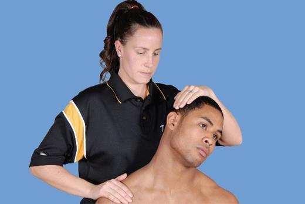
Muscle Energy: Principles, Safety, Efficacy
What Is Muscle Energy?
Muscle energy is a direct, active technique in which the physician localizes the segment to its restrictive barrier, then asks the patient to perform a precisely controlled isometric contraction against the physician's unyielding counterforce. After relaxation, the physician takes up the new barrier and repeats.
Mechanism
- Post-isometric relaxation: contracting the muscle leads to relaxation of the agonist after release
- Reciprocal inhibition: contracting an antagonist relaxes the agonist
- Restores normal joint mechanics by engaging the restrictive barrier and progressively moving through it
- Directly treats the dysfunctional segment
General Principles
- Engage ALL three planes of motion (F/E, SB, R) to the barrier before the patient contracts
- Patient provides only 20% force (gentle isometric, not maximal)
- Hold contraction for 3–5 seconds
- Take up new slack after each repetition (3–5 reps typical)
- Always monitor at the dysfunctional segment to confirm the force reaches it
- Recheck after treatment
Indications
- Somatic dysfunction of the lower cervical spine (C2–C7): both extended and flexed dysfunctions
- Hypertonic long muscles (SCM, scalenes)
- Post-injury or post-surgical cervical pain with preserved range of motion
- Patients who cannot tolerate HVLA or for whom HVLA is contraindicated
- Cervicogenic headache, restricted ROM, neck pain, shoulder/arm referral
Contraindications
Absolute
- Acute fracture or dislocation in the treatment area
- Severe instability (e.g., atlantoaxial instability in Down syndrome, RA)
- Active infection or osteomyelitis at the segment
- Active malignancy at the treatment site
- Patient refusal
Relative (Use Judgment)
- Osteoporosis (apply lower forces)
- Vertebral artery insufficiency (use care with rotation + extension)
- Acute disc herniation with significant radiculopathy
- Patient is systemically unwell or hemodynamically unstable
- Severe pain that prevents relaxation and cooperation
- Provider inexperience in the region
Muscle Energy: Extended Dysfunctions (C2–C7)
- Localize the level: Place your monitoring fingers bilaterally on the articular pillars of the dysfunctional segment (e.g., C5).
- Engage flexion barrier: Lift/scoop the patient's head and tuck the chin, flexing the spine DOWN TO the restricted segment. You should feel the motion localize at C5.
- Engage SB/Rotation barrier: Translate the segment toward the side of restriction (e.g., for ERSl — translate from RIGHT to LEFT, inducing right sidebending and right rotation). Take it to the feather's edge — just at the point of first resistance, not beyond.
- Patient instruction: "Push your head back into the table" OR "Gently push the back of your head up toward the ceiling." The patient extends against your unyielding resistance for 3–5 seconds.
- Relax: Patient completely relaxes for 2–3 seconds.
- Re-engage: Take up the new slack in ALL planes — a little more flexion, a little more translation toward restriction. Repeat 3–5 times.
- Recheck: Reassess translation. The segment should now move more freely.
Alternative Positioning
Instead of using the head as a long lever, hold the segment between your thumb (one articular pillar) and index/middle finger (other pillar). Pull toward you to induce sidebending/rotation to the barrier. Lift just below the segment to engage extension. Then use the other hand under the chin to direct the force. This makes the technique more focal and avoids excessive global motion.
Muscle Energy: Flexed Dysfunctions (C2–C7)
- Localize the level: Place monitoring fingers bilaterally on the articular pillars at C6.
- Engage extension barrier: Place ring and pinky fingers just INFERIOR to C6 and lift toward the ceiling to induce local extension at that segment.
- Engage SB/Rotation barrier: Translate C6 from right to left (inducing left sidebending and left rotation) to the feather's edge.
- Patient instruction: "Tuck your chin" OR "Gently bring your chin toward your chest" OR "Lift your head up slightly." The patient flexes against your unyielding resistance for 3–5 seconds.
- Relax and re-engage: Relax, take up new slack in extension + translation. Repeat 3–5 times.
- Recheck: Reassess. Restriction should have improved.
Muscle Energy: Long Restrictors — SCM & Scalenes
Sternocleidomastoid (SCM) Muscle Energy
Assessment
Palpate both SCM muscles for hypertonicity. If one is significantly more hypertonic, treat that side. (Note: AC7/AC8 tender points relate to the sternal and clavicular heads of SCM — if acutely tender, counterstrain first.)
Setup (opposite of AC7 counterstrain position)
- Have the patient slide up on the table until the head is just off the end (support the head).
- Introduce Extension at the cervical level — allow the head to drop into extension (opposite of the AC7 flexion position).
- Introduce Sidebending away from the side being treated (e.g., treating right SCM → sidebend left).
- Introduce Rotation toward the side being treated (e.g., treating right SCM → rotate right). You should feel the SCM begin to stretch.
- Support the head with your knee or thigh to maintain position hands-free.
Muscle Energy
- Instruct the patient: "Lift your head toward the ceiling AND turn your head to the left" (for treating right SCM). This fires the SCM.
- Resist for 3–5 seconds. Relax.
- Increase extension, sidebending away, and rotation toward slightly. Repeat 3–5 times.
- Recheck: Palpate SCM for reduced hypertonicity.
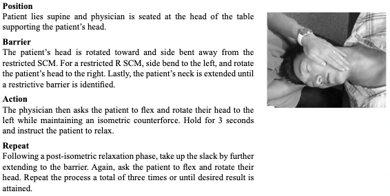
Scalene Muscle Energy
Anatomy Reminder
The scalenes (anterior, middle, posterior) attach from the cervical transverse processes to the 1st and 2nd ribs. They are lateral flexors and accessory respiratory muscles. Anterior tender points (AC2–6) are located near their cervical attachments.
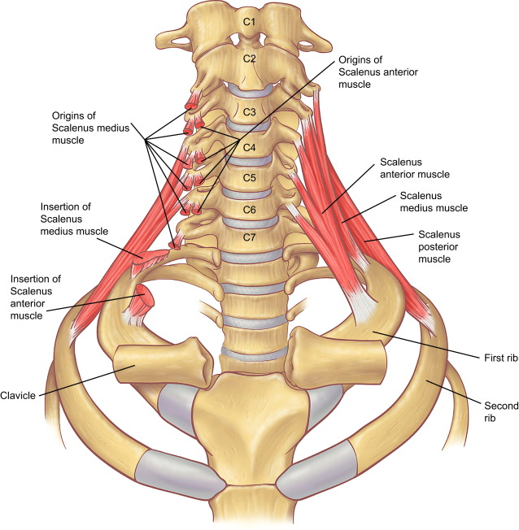
Setup
- Have the patient slide up so the head is at the edge of the table.
- Palpate the scalene region to identify the most hypertonic area. Monitor with fingertips.
- Introduce Extension — allow or gently guide the head into slight extension to begin stretching the scalenes.
- Introduce Sidebending away from the treated side (e.g., treating left scalenes → sidebend right).
- Introduce Rotation away from the treated side. Feel the scalene begin to engage.
- Place one hand on the ipsilateral shoulder/clavicular region to prevent the first and second ribs from rising (stabilize the distal attachment).
- Support the head with your thigh or knee. Relax and feel the scalene engage.
Muscle Energy
- Instruct the patient: "Gently lift your head up" (toward the ceiling). This fires the scalenes.
- Resist for 3–5 seconds. Relax.
- Increase extension, sidebending away, and rotation away slightly. Repeat 3–5 times.
- Recheck: Palpate scalene region for reduced hypertonicity.
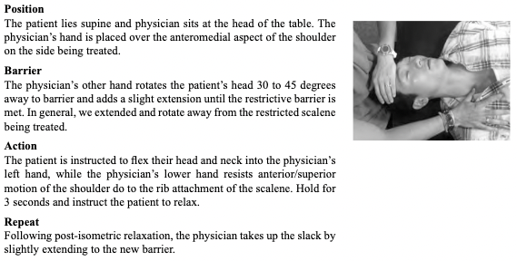
Counterstrain: Principles, Safety, Efficacy
What Is Counterstrain?
Counterstrain is an indirect, passive technique. The physician identifies a tender point, places the patient in a position that maximally reduces tenderness (position of ease), holds for 90 seconds, and then passively returns to neutral. The proposed mechanism involves resetting abnormally firing proprioceptors or muscle spindles.
Mechanism
- Tender points reflect areas of abnormal neuromuscular activity or fascial tension
- Shortening the affected tissues (indirect approach) quiets aberrant spindle activity
- 90-second hold allows reset of gamma motor neuron output
- Slow passive return to neutral is essential — do not let the patient move themselves
General Rules
- Monitor the tender point throughout — must achieve ≥70% reduction in tenderness
- Fine-tune position until maximum reduction is reached
- Hold 90 seconds without moving
- Return SLOWLY and PASSIVELY to neutral
- Recheck tenderness and range of motion
- Can treat multiple tender points per session
Indications for Counterstrain
- Acute and chronic cervical somatic dysfunction with identifiable tender points
- Patients who cannot tolerate more direct techniques (post-trauma, acute pain, hypersensitive)
- As a first step before muscle energy (CS may resolve segmental dysfunction and simplify further treatment)
- Cervicogenic headache, restricted rotation (especially AC1), neck stiffness
Relative Contraindications for Counterstrain
- Unstable fracture, dislocation, or severe instability
- Active malignancy or infection at the site
- Positioning required would compromise vascular or neurological structures
- Patient unable to cooperate or relax
Anterior Cervical Counterstrain — Overview
Finding Anterior Tender Points
Overview of Anterior Cervical Tender Points
- AC1 (maverick point): High on the posterior edge of the ramus of the mandible between the earlobe and the angle of the mandible, near the transverse process of C1. Anatomical correlation: rectus capitis anterior.
- AC2: Anterolateral tip of the anterior tubercle of the transverse process with the lateral muscle mass at that level. Anatomical correlation: rectus capitis anterior and rectus capitis lateralis.
- AC3: At the anterior cervical transverse process level, just anterior to the articular pillar. Anatomical correlation: longus capitis.
- AC4: At the anterior cervical transverse process level, just anterior to the articular pillar. Anatomical correlation: longus capitis.
- AC5: At the anterior cervical transverse process level, just anterior to the articular pillar. Anatomical correlation: longus colli.
- AC6: At the anterior cervical transverse process level, just anterior to the articular pillar. Anatomical correlation: longus colli.
- AC7 (maverick point): Superior surface of the clavicle at the clavicular attachment of the sternocleidomastoid. Anatomical correlation: clavicular division of the sternocleidomastoid.
- AC8: Medial head of the clavicle at the sternal attachment of the sternocleidomastoid. Anatomical correlation: sternal division of the sternocleidomastoid.
General Treatment Rule
For most anterior cervical tender points (AC1, AC2–6, AC8): Sidebend AWAY from the tender point and Rotate AWAY from the tender point. FLEX the spine (because it's anterior). The exception is AC7.
AC7 = Flex + Sidebend TOWARD + Rotate AWAY
Mnemonic: STAR (Sidebend Toward, Rotate Away) or STRAW (Sidebend Toward, Rotate Away, oh Well)
Flexion Amount by Level (AC2–6)
AC2–6 flexion amount: Little, A lot, Little, A lot, A lot
(AC2 = slight, AC3 = marked, AC4 = slight, AC5 = marked, AC6 = marked)
For written questions: if flexion is described as marked / moderate / significant → AC3, 5, or 6. If slight / minimal → AC2 or 4.
Anterior C1 (AC1)
Tender Point Location
On the lateral process of C1 — between the mastoid process and the angle of the mandible. Posterior to the ascending ramus of the mandible, anterior to the mastoid. This is a sensitive area — palpate with light pressure only.
Clinical Presentation
Patients often present unable to rotate their head in one direction (e.g., cannot look over one shoulder). The AC1 tender point will be on the opposite side from the direction they cannot look. Treating it can dramatically restore rotation in 90 seconds.
- Identify and monitor the tender point (e.g., right AC1 tender point).
- Scoop the hand under the opposite side of the patient's head (e.g., if treating right AC1, support from the left). Rest the head in your hand on the table — not held up in the air.
- Rotate the head AWAY from the tender point (e.g., right AC1 → rotate to the LEFT). This is the direction the patient said they COULD look.
- Fine-tune: sidebend AWAY from the tender point. Because the head is rotated ~90°, this will look like flexion/extension but is actually sidebending. Add small adjustments until maximum tenderness reduction is achieved (≥70%).
- Hold for 90 seconds.
- Slowly and passively return the head to neutral by sliding your hand out from underneath — do not have the patient turn their own head.
- Recheck tender point and rotation ROM.
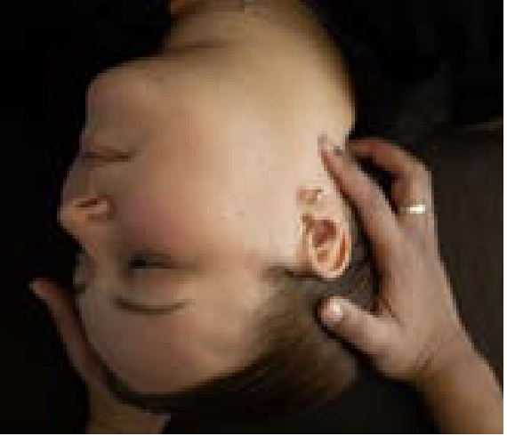
Anterior C2–6 (AC2–6)
Tender Point Location
On the anterior aspect of the transverse processes of C2–C6. Coming slightly anterior to the articular pillar — there is a bump (the anterior tubercle of the transverse process). Slide anterior from the articular pillar. These are related to scalene and other anterior muscle attachments.
- Identify and monitor the tender point (e.g., left AC4 tender point).
- Support the patient's head in your palm, elbow resting on hip for stability.
- Introduce Flexion — tuck chin toward chest. Amount of flexion depends on level (see chart below).
- Introduce Sidebending AWAY from the tender point (e.g., left AC4 → sidebend right).
- Introduce Rotation AWAY from the tender point (e.g., left AC4 → rotate right).
- Fine-tune all three planes until ≥70% reduction in tenderness.
- Hold for 90 seconds.
- Return slowly and passively to neutral.
- Recheck tender point.
Flexion Amount by Level
| Level | Flexion Amount | Special Notes |
|---|---|---|
| AC2 | Slight (minimal) | Least flexion of the group |
| AC3 | Marked | Significant flexion needed |
| AC4 | Slight (minimal) | Head may be off end of table; maintain NORMAL lordosis (not excessive extension) |
| AC5 | Marked | Significant flexion needed |
| AC6 | Marked | Significant flexion needed |
Anterior C7 (AC7)
Tender Point Location
On the superior aspect of the clavicle at the attachment of the clavicular head of the SCM. More lateral than AC2–6 tender points. Palpate at the medial clavicle, just at the SCM clavicular head attachment.
- Identify and monitor the tender point at the clavicular SCM attachment (e.g., left AC7).
- Support the patient's head.
- Introduce Flexion — tuck the chin.
- Introduce Sidebending TOWARD the side of the tender point (e.g., left AC7 → sidebend LEFT).
- Introduce Rotation AWAY from the tender point (e.g., left AC7 → rotate RIGHT).
- Fine-tune. Monitor at the clavicular SCM attachment until ≥70% reduction.
- Hold for 90 seconds.
- Return slowly and passively to neutral.
- Recheck.
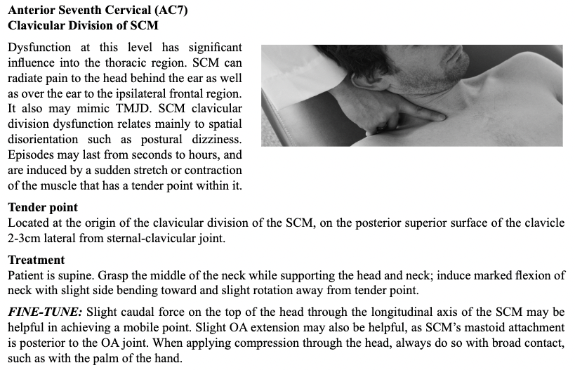
Anterior C8 (AC8)
Tender Point Location
On the medial end of the clavicle near the sternoclavicular joint / suprasternal notch. This corresponds to the sternal head of the SCM. Both AC7 and AC8 are SCM-related — AC7 = clavicular head; AC8 = sternal head.
- Identify and monitor the tender point at the sternoclavicular joint / suprasternal notch (e.g., left AC8).
- Support the patient's head.
- Introduce Flexion.
- Introduce Sidebending AWAY from the tender point (e.g., left AC8 → sidebend RIGHT).
- Introduce Rotation AWAY from the tender point (e.g., left AC8 → rotate RIGHT).
- Fine-tune until ≥70% reduction at the tender point.
- Hold 90 seconds. Return passively to neutral.
- Recheck tenderness and range of motion.
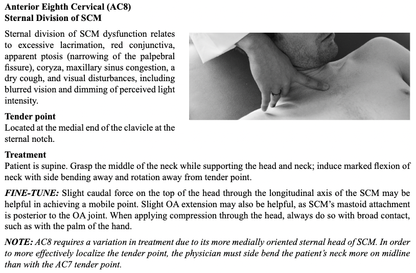
Indications & Contraindications Summary
| Condition/Situation | Muscle Energy | Counterstrain |
|---|---|---|
| Lower cervical somatic dysfunction | Indicated | Indicated |
| Hypertonic SCM or scalene | Long restrictor ME | AC7/AC8 |
| Acute pain, hypersensitivity | Use caution | Preferred — gentler |
| Cervicogenic headache | Indicated | Indicated (esp. AC1) |
| Acute fracture or dislocation | Contraindicated | Contraindicated |
| Vertebral artery insufficiency | Relative CI — avoid ext+rotation | Generally safer |
| Osteoporosis | Reduce forces | Safer — no direct forces |
| Active malignancy at site | Contraindicated | Contraindicated |
| Myelopathy / cord compression | Extreme caution | Extreme caution |
| Patient cannot cooperate/relax | Difficult | Position of ease may still work |
Clinical Pearls & Why Treat the Cervical Spine?
Clinical Reasons to Evaluate & Treat the Cervical Spine
Biomechanical Model
- Neck pain, restricted ROM
- Shoulder pain (referral patterns, levator scap tension)
- Thoracic outlet syndrome considerations
- Upper extremity radiculopathy (C5–C8)
- Forward head posture contributing to global mechanics
Neurological Model
- Sinus congestion, otitis media (upper cervical → CN innervation)
- Headaches (especially greater occipital neuralgia)
- CN XI irritation → SCM/trapezius hypertonicity
- Cervical radiculopathy (numbness/tingling in arm)
Respiratory-Circulatory Model
- Lymphatic drainage of the head and neck (scalene pump)
- Accessory respiratory muscle hypertonicity (scalenes)
- Pneumonia, asthma: scalene tension affects rib 1 mobility
Autonomic / Vagal Model
- Reflux, nausea, vomiting (vagal → upper GI)
- Upper GI dysmotility
- Sinus/middle ear conditions (OA/upper cervical vagal proximity)
- Cardiac rate modulation (vagal innervation)
Quick Reference Summary — All Techniques
| Technique | Dysfunction Type | Barrier Engaged | Patient Contracts |
|---|---|---|---|
| ME Extended | ERSr/l | Flexion + SB/R toward restriction | Extend (push head back/up) |
| ME Flexed | FRSr/l | Extension + SB/R toward restriction | Flex (tuck chin / lift head) |
| ME SCM | Hypertonic SCM | Ext + SB away + Rotate toward | Lift head + rotate toward SCM side |
| ME Scalene | Hypertonic scalene | Ext + SB away + Rotate away | Lift head up |
| CS AC1 | AC1 tender point | Rotate away (+ SB away) | None — passive 90 sec hold |
| CS AC2–6 | AC2–6 tender point | Flex + SB away + Rotate away | None — passive 90 sec hold |
| CS AC7 | AC7 (clavicular SCM) | Flex + SB TOWARD + Rotate away | None — passive 90 sec hold |
| CS AC8 | AC8 (sternal SCM) | Flex + SB away + Rotate away | None — passive 90 sec hold |
Common Exam Question Traps
- "Always treated in flexion" for ME → FALSE for ME (only true for HVLA). ME treats extended dysfunctions in flexion and flexed dysfunctions in extension.
- Prominent articular pillar side → Opposite the direction of rotation (e.g., ERSl → prominent RIGHT pillar).
- AC7 uses SEA like all others → FALSE. AC7 uses STAR/STRAW — sidebend TOWARD.
- Worse in flexion = flexed dysfunction → FALSE. Worse in flexion = EXTENDED dysfunction (restricted in flexion = prefers extension = extended).
- Translation from R→L = sidebending LEFT → FALSE. Translating from right to left pushes the segment left, creating sidebending to the RIGHT.
- You can have type I mechanics in the lower cervicals → Technically possible but very uncommon. For all practical purposes and exam purposes, lower cervicals always couple SB and R in the same direction.